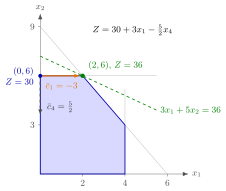

Nonoptimality and Reduced Costs¶
Theorem¶
Consider a linear program in equation form , , , where , and include the slack variables and is the -th column of . Let be a basis whose basic solution is feasible, with basis matrix , objective coefficients of the basic variables, index set of the nonbasic variables, and reduced costs .
Theorem (nonoptimality and reduced costs). If the current basic feasible solution is not optimal, then there is a nonbasic variable with a negative reduced cost.
Equivalently, if for all , the basic feasible solution is optimal. More precisely, every feasible solution satisfies
The converse of this theorem fails in general: a negative reduced cost does not prove that the basic feasible solution is not optimal. It does if the basic feasible solution is nondegenerate (); then the basic feasible solution is optimal if and only if all reduced costs are nonnegative.
Interpretation¶
The theorem is what allows the simplex algorithm to stop. Whenever the current basic feasible solution can still be beaten, at least one reduced cost is negative, so the stopping rule "no negative reduced cost" never stops too early. It is the algebraic counterpart of the geometric statement that a nonoptimal corner point has a better adjacent corner point.

The figure uses the linear program of Examples 2 and 4 below, subject to , , , , with slacks . At the corner , with basis and , the simplex tableau reached from the slack basis after one iteration has the objective row , that is, . The negative reduced cost belongs to the orange edge: raising while stays moves along and raises by per unit, until reaches at with . The reduced cost belongs to the grey edge, along which falls. At all reduced costs are nonnegative (Example 4 below), and the line touches the region only there.
The displayed identity is the objective row of the tableau read as an equation. It holds for every solution of , because the tableau arises from the original equations by row operations. For a feasible every , so nonnegative reduced costs give . Feasibility of the basic solution itself is essential: an infeasible basic solution can have only nonnegative reduced costs and a value no feasible point reaches (Example 2 below).
The converse fails because of degeneracy. A negative says that raising improves at rate , but the ratio test may allow only a step of length ; the point may then already be optimal, and another basis of the same point shows nonnegative reduced costs (Example 3 below). At a nondegenerate basic feasible solution every ratio is positive, so a negative reduced cost does give a strictly better solution or unboundedness.
OR Modelling states the same test on its optimality test page, with . Mind the sign: OR Modelling's reduced cost is , so "all reduced costs " there means "all " here. In sensitivity analysis, for example in objective coefficient ranging, the same sign condition decides whether a basis stays optimal when the data change.
Key Results¶
- If a basic feasible solution is not optimal, some nonbasic variable has .
- For a basic feasible solution and any feasible , , so for all implies optimality.
- A better feasible solution than can only exist if for at least one nonbasic .
- At a nondegenerate basic feasible solution, the reduced costs give the actual rate of improvement of a basis change, and optimality holds if and only if all .
- At a degenerate basic feasible solution a basis change need not lead to a new corner point, and a negative reduced cost does not prove nonoptimality.
Examples¶
1. A nonoptimal basic feasible solution. For subject to , , , , with slacks , the basis has the basic solution , , , . Here , and the reduced costs are , and . The tableau does not show optimality, and since the solution is nondegenerate it is in fact not optimal: enters with column , only the row gives a ratio, , and the new basis has , , , . Its reduced costs , , are nonnegative, so is optimal.
2. Feasibility is needed. For subject to , , , (slacks ), the basis gives , , and , with reduced costs and . All reduced costs are nonnegative, yet the optimum of the linear program is : the basic solution is infeasible, and the bound is not attained by any feasible point.
3. Optimal despite a negative reduced cost. Maximize subject to , and , with slacks . The optimum is , where three constraints are binding, so it is degenerate. For the basis the tableau rows are and , and the objective row is : although is optimal. The ratio test lets leave with step , and the basis of the same point has , which shows optimality.
4. An optimality certificate. For the linear program of Example 2 above, the final simplex tableau has the objective row . For every feasible this means , because the slacks are nonnegative. Equality holds exactly when , that is, and , which forces , . So is the unique optimal solution.
Prerequisites¶
- Simplex Tableau in Matrix Form
- Basis and Basis Matrix
- Nonoptimal and Optimal Corner Points
- Simplex Optimality Test
Related Concepts¶
- Revised Simplex Algorithm
- Bland's Rule
- Cycling
- Dual Solution from the Simplex Tableau
- Objective Coefficient Ranging
- Reduced Cost
- Degeneracy
Sources¶
- Math VI: Convexity and Optimization · Week 6
- H. E. Nusse and M. Dienstknecht, Math VI: Convexity and Optimization, lecture notes 2026–2027, Section 6.3.2 and Appendix C.2
Aliases: optimality criterion of the simplex algorithm, nonnegative reduced costs imply optimality Keywords: \bar{c}j<0, \bar{c}_j\geq0, Z=\boldsymbol{c}_jx_j, optimality test, degenerate basic feasible solution Symbols: element of, sum }}^{\top}\boldsymbol{B}^{-1}\boldsymbol{b}-\sum_{j\in\mathcal{N}}\bar{c
Last updated: 5 November 2026 12:47
Nonoptimality and Reduced CostsDual Solution from the Simplex TableauObjective Coefficient RangingSimplex Tableau in Matrix FormBasis and Basis MatrixNonoptimal and Optimal Corner PointsSimplex Optimality TestRevised Simplex AlgorithmBland's RuleCyclingReduced CostDegeneracy